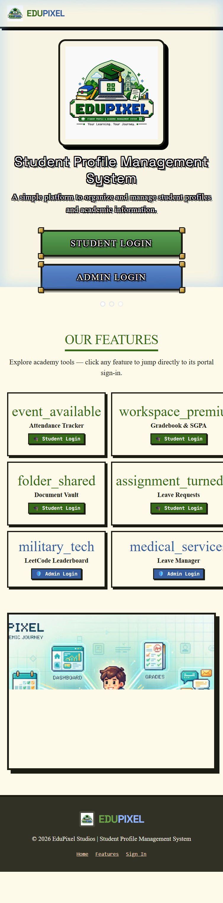
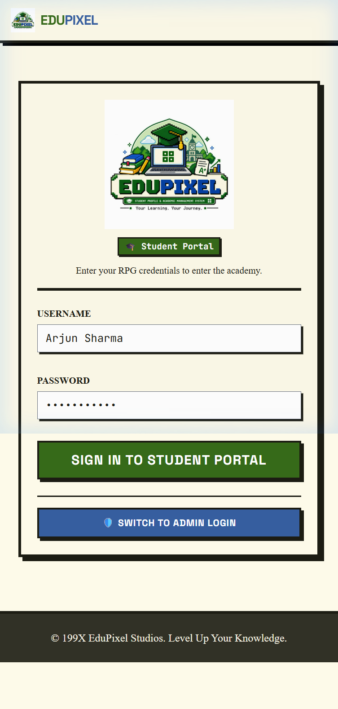
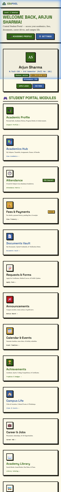
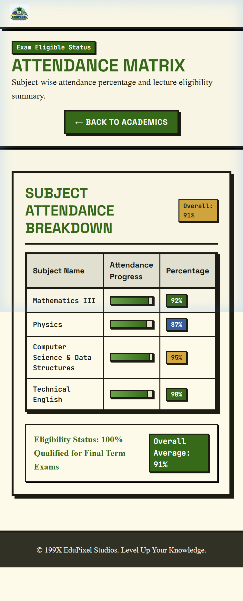
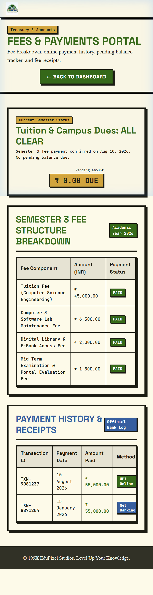
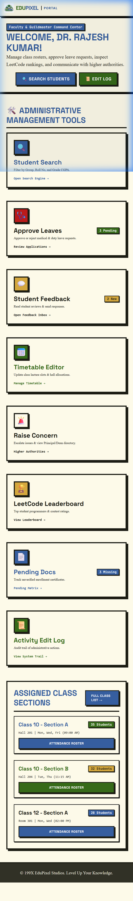
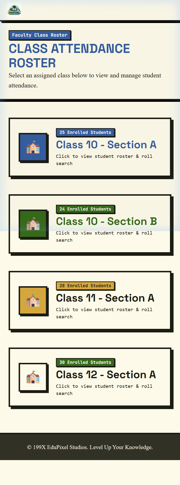
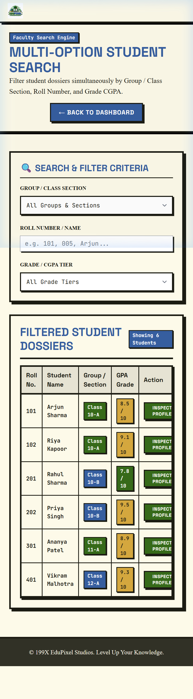
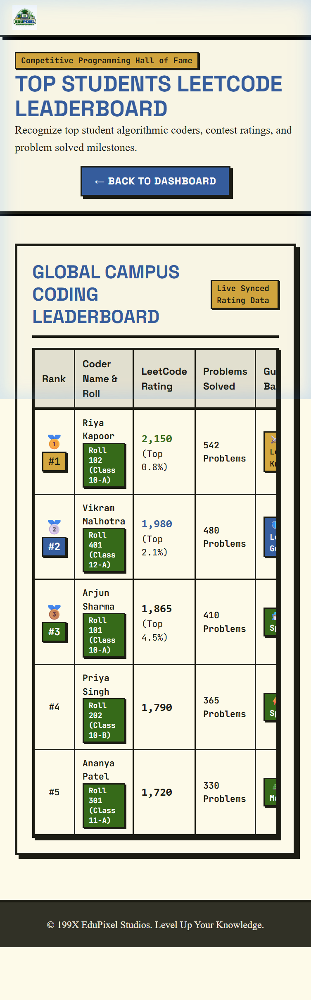

An Integrated Web-Based Student Academic Profile, Attendance, Fee & Campus Management System
Developed under the guidance of:
Mr. Amitabh Shrivastava, Trainer, Department of CSE (AI & ML)
| Project Attribute | Project Information Details | |
|---|---|---|
| PROJECT TITLE | Student Profile Management System (EduPixel) | |
| DEPARTMENT & INSTITUTION | Department of Computer Science & Engineering (AI & ML), Chitkara University | |
| PROJECT TEAM | Team No. 19 \ | Team Leader: Pranava Mittal |
| PROJECT TRAINER | Mr. Amitabh Shrivastava, Trainer | |
| CORE TECHNOLOGIES | HTML5, CSS3, Vanilla JavaScript (ES6+), VS Code, Git, GitHub | |
| ACADEMIC SESSION | Academic Year 2025–2026 |
We, the members of Team No. 19 from the Department of Computer Science and Engineering (CSE - AI & ML), Chitkara University, hereby declare that the project report entitled 'Student Profile Management System (EduPixel)' is a bonafide record of authentic project work carried out by us under the supervision of our trainer, Mr. Amitabh Shrivastava.
We confirm that the web application, user interface components, and client-side logic presented herein represent our original work developed using standard HTML5, CSS3, and JavaScript, created using Visual Studio Code and tracked via Git and GitHub. All references to creative design inspirations (Cofounder.co and Harmony Free Serif) have been formally cited.
| ID / Roll No. | Student Name | Email Address | Assigned Project Module & Area |
|---|---|---|---|
| 2510992516 | Pranava Mittal (Team Leader) | pranava2516.beai25@chitkara.edu.in | Architecture, Navigation & Core Dashboard |
| 2510992708 | Naman Sharma | naman2708.beai25@chitkara.edu.in | Attendance Engine & Class Rosters |
| 2510993513 | Anmol Arora | anmol3513.beai25@chitkara.edu.in | Student Search & Fee Ledger Management |
| 2510992539 | Aditya Saini | aditya2539.beai25@chitkara.edu.in | Leave Management & Mobile Navigation |
| TEAM LEADER SIGNATURE | PROJECT TRAINER VERIFICATION |
|---|---|
___________________________ Pranava Mittal (Roll No: 2510992516) Team Leader, Team No. 19, CSE AI & ML | ___________________________ Mr. Amitabh Shrivastava Trainer, Chitkara University |
We wish to express our profound gratitude to the Department of Computer Science and Engineering (CSE - AI & ML), Chitkara University, for providing the academic infrastructure, computing facilities, and learning environment that made the development of the 'Student Profile Management System (EduPixel)' possible.
We extend our sincere and special thanks to our trainer, Mr. Amitabh Shrivastava, for his valuable guidance, technical mentorship, and constant encouragement throughout the development of this project. His practical insights on structuring user workflows, class attendance rosters, leave adjudication, and clean user interface practices were instrumental in the successful completion of this project.
We also acknowledge the supportive peer learning environment within the CSE AIML department that facilitated constructive feedback during interface prototyping and responsive testing.
ACADEMIC CREDITS & MENTORSHIP
Project developed by Team No. 19 (Pranava Mittal, Naman Sharma, Anmol Arora, Aditya Saini) under the mentorship of Mr. Amitabh Shrivastava, Trainer, Department of Computer Science and Engineering (CSE - AI & ML), Chitkara University.
The team also acknowledges the creative design resources that inspired the visual and typographic presentation of this project:
#FDFAE9).The 'Student Profile Management System (EduPixel)' is a comprehensive, lightweight, and responsive web-based platform developed by Team No. 19 in the Department of Computer Science and Engineering (CSE - AI & ML) at Chitkara University. The platform unites academic profiles, course gradebooks, lecture attendance tracking, fee payment ledgers, bonafide document repositories, leave request queues, campus services, and coding leaderboards into an integrated 24-view environment. Built using standard HTML5, CSS3, and JavaScript without external runtime frameworks, the project provides a clean and student-friendly user experience inspired by the layout of Cofounder.co and the typography of the Harmony Free Serif typeface.
| Chapter | Title | Primary Topics Addressed | Section |
|---|---|---|---|
| Chapter 01 | Introduction & Project Overview | Background, Motivation, Objectives & Operational Scope | Section 1 |
| Chapter 02 | Literature Survey & Existing System | Study of Traditional Records & Deficiencies Resolved | Section 2 |
| Chapter 03 | Design & Typographic Inspiration | References: Cofounder.co & Harmony Serif (Awwwards) | Section 3 |
| Chapter 04 | Software Requirements Specification | User Roles, Privilege Scopes & Functional Use Cases | Section 4 |
| Chapter 05 | Non-Functional Requirements | Usability, Accessibility & Responsive Breakpoints | Section 5 |
| Chapter 06 | Languages & Development Tools | HTML5, CSS3, JavaScript, VS Code, Git, GitHub | Section 6 |
| Chapter 07 | System Architecture & Data Flow | Client-Side Architecture & Web Storage Lifecycle | Section 7 |
| Chapter 08 | Role-Based Access Control | Student & Trainer Privilege Scopes (auth.js) | Section 8 |
| Chapter 09 | Module: Public & Authentication | Landing Page (index.html), Login & Transition Screen | Section 9 |
| Chapter 10 | Module: Student Profile & Grades | Student Dashboard, Academic Dossier & SGPA Tracker | Section 10 |
| Chapter 11 | Module: Attendance & Fee Portal | Subject Attendance Logs & Fee Breakdown Ledger | Section 11 |
| Chapter 12 | Module: Vault, Leaves & Campus | Document Repository, Applications & Campus Services | Section 12 |
| Chapter 13 | Module: Faculty/Trainer Center | Faculty Dashboard, Class Roster & Attendance Marker | Section 13 |
| Chapter 14 | Module: Student Search & Leaves | Multi-Filter Search Engine & Leave Adjudication Queue | Section 14 |
| Chapter 15 | Module: Leaderboard & Audit Logs | LeetCode Coding Practice, Escalations & Edit Logs | Section 15 |
| Chapter 16 | User Interface & Styling System | Custom CSS Tokens, Buttons, Badges & Data Tables | Section 16 |
| Chapter 17 | System Evaluation & Performance | Resource Efficiency, Page Rendering & Device Display | Section 17 |
| Chapter 18 | Security & Data Handling | Client-Side Storage Isolation & Input Validation | Section 18 |
| Chapter 19 | Testing & Quality Assurance | Functional Testing Matrix & Compatibility Verification | Section 19 |
| Chapter 20 | Future Enhancements & Scope | Conceptual Roadmap (Backend, Analytics, Payments, PWA) | Section 20 |
| Chapter 21 | Conclusion & Team Summary | Summary of Work Done & Team Member Contributions | Section 21 |
| Chapter 22 | References & Appendices | Citations, Web Standards Documentation & Glossary | Section 22 |
In modern higher education environments globally, universities and colleges manage a wide spectrum of academic and administrative workflows every day. These workflows span attendance logs across theoretical and practical laboratory sessions, mid-semester continuous evaluations, credit allocations, fee transaction ledgers, bonafide verification, medical leave requests, and career placement notices.
Traditionally, many higher education institutions have operated with separate or paper-based systems: physical attendance registers, spreadsheet marks files maintained by individual instructors, and separate online fee portals. When students need to verify attendance eligibility or download official grade sheets, they often face delays navigating fragmented departmental offices.
As students in the Department of Computer Science and Engineering (CSE - AI & ML) at Chitkara University, the motivation of Team No. 19 is to design and develop 'EduPixel'—a centralized, lightweight, and responsive web-based Student Profile Management System. By consolidating student records into an accessible client-side application, EduPixel empowers students to monitor their academic trajectory while giving trainers efficient digital tools to manage classroom cohorts without software complexity.
A comprehensive review of existing collegiate record-keeping workflows revealed substantial operational bottlenecks in traditional academic environments. Traditional workflows generally rely on three disconnected mediums:
1. Paper-Based Registers: Instructors manually call roll numbers and mark attendance in physical registers, which require manual monthly compilation and are prone to calculation errors.
2. Disconnected Spreadsheet Files: Department marks, credit calculations, and student contact records are kept in standalone spreadsheets that lack centralized synchronization.
3. Fragmented Online Portals: Universities often deploy separate legacy portals for examination registration, fee payments, and hostel bookings, forcing students to remember multiple login accounts.
EduPixel resolves these challenges by introducing a single unified portal with 24 dedicated views, instant 1-click class roster marking for trainers, automatic attendance threshold calculations, centralized fee receipt ledgers, and responsive navigation optimized for both desktop and mobile smartphones.
The visual identity of EduPixel was thoughtfully created to provide an engaging, clear, and student-friendly user experience. The design unites two respected web design and typographic references:
Citation URL: https://cofounder.co/
The layout discipline of EduPixel is inspired by Cofounder.co, known for its clean editorial bounding boxes, micro-borders, and structured whitespace. EduPixel translates these principles into collegiate UI components:
#1C1C13): Every card, module container, input field, and data table is bounded by crisp 2px to 4px solid borders, creating distinct visual sections without clutter.#FDFAE9): A gentle cream background reduces visual glare during extended study sessions and provides superior contrast for dark typography.4px 4px 0px #1C1C13): Action buttons and cards feature solid drop shadows that translate (-2px, -2px) on hover, providing tactile visual feedback.Citation URL: https://www.awwwards.com/inspiration/harmony-free-serif-typeface
Showcased on Awwwards for its distinguished serif craftsmanship, the Harmony / Harmond Free Serif typeface inspired the heading typography of EduPixel:
style.css)/* Core Design Tokens & Colors */
:root {
--bg-surface: #fdfae9;
--on-bg: #1c1c13;
--primary-green: #366a19;
--primary-green-light: #6ba34b;
--secondary-blue: #365e9f;
--secondary-blue-light: #91b6fe;
--tertiary-brown: #7c5730;
--gold-accent: #d4a73e;
--surface-card: #f1eede;
}
/* Cofounder.co Micro-Borders & Tactile Shadows */
.pixel-border {
box-shadow: 4px 4px 0px 0px #1c1c13;
border: 4px solid #1c1c13;
}
.pixel-shadow {
box-shadow: 8px 8px 0px 0px #1c1c13;
}
/* Ornate RPG-Styled Action Buttons */
.ornate-btn-inner {
border: 4px solid #1c1c13;
padding: 12px 24px;
box-shadow: 0px 4px 0px rgba(0,0,0,0.4);
display: flex;
align-items: center;
gap: 8px;
}
.ornate-btn-green .ornate-btn-inner {
background: linear-gradient(to bottom, #5ba454 0%, #407b38 100%);
}The system defines two primary user classes with distinct operational boundaries:
1. Student Role: Allows enrolled students to access their personal academic dossiers, view attendance status across subjects, check fee payment history, submit leave requests, and view campus notices.
2. Faculty / Trainer Role: Allows trainers and department faculty to mark daily class attendance, search student records across multiple criteria, approve or reject leave requests, and view department activity logs.
| Req ID | Module Title | Source Code File | Functional Requirements Description |
|---|---|---|---|
| FR-01 | User Authentication | login.html | Dual-tab login interface for Student and Trainer accounts; stores role in localStorage and redirects to respective dashboard. |
| FR-02 | Student Profile Dossier | profile.html | Renders student identity card (Roll No 101, CGPA 8.5, Attendance 91%) and personal/academic history. |
| FR-03 | Subject Attendance Logs | attendance.html | Displays per-subject lecture counts, conducted vs attended numbers, percentage progress bars, and 75% cutoff warnings. |
| FR-04 | Fee Statements & Receipts | student-fees.html | Itemized breakdown of tuition, exam, and hostel fees, payment receipt downloads, and online payment simulation. |
| FR-05 | Document Repository | student-documents.html | Secure digital vault for downloading verified bonafide certificates, ID card scans, and semester marksheets. |
| FR-06 | Class Attendance Roster | admin-classes.html, class-detail.html | Interactive class roster allowing trainers to mark Present, Absent, or On-Duty with live present/absent counters. |
| FR-07 | Multi-Filter Student Search | admin-search.html | Search query engine to locate students by Roll Number, Name, Class Section, Blood Group, or CGPA spectrum. |
| FR-08 | Leave Request & Approval | student-requests.html, admin-leaves.html | Student submission of medical leave with doctor notes and trainer approval/rejection queue with remarks. |
#1C1C13) on surface canvas (#FDFAE9) maintains high contrast, ensuring effortless reading in varied classroom lighting.nav-active) and immediate logout triggers.In strict adherence to academic project guidelines:
This college project was created and organized by Team No. 19 using standard web development languages and developer tools:
| Tool / Technology | Functional Classification | Technical Utility & Role in Project |
|---|---|---|
| Semantic HTML5 | Structural Markup | Provides semantic elements ( |
| Modern CSS3 | Styling & Design System | Custom stylesheet (style.css) containing CSS custom properties (--bg-surface, --primary-green), CSS Grid layouts, and pixel border rules. |
| Vanilla JavaScript (ES6+) | Client-Side Logic | Standard browser JavaScript (auth.js) handling dynamic navigation rendering, mobile drawer toggles, search filtering, and localStorage. |
| Visual Studio Code (VS Code) | Code Editor / IDE | Primary IDE utilized for authoring HTML/CSS/JS files, multi-file workspace organization, and live server preview testing. |
| Git Version Control | Source Code Management | Distributed version control system used to track changes, create feature branches, and maintain atomic commit histories. |
| GitHub Repository | Remote Code Hosting | Online repository hosting used to back up project source files and facilitate project submission and review. |
| Browser DevTools | Testing & Debugging | Google Chrome and Firefox Developer Tools used for inspecting DOM elements, testing responsive screen sizes, and verifying localStorage. |
EduPixel is designed as a modular, client-side web application. The architecture consists of three interconnected layers:
1. View Layer: 24 independent HTML5 documents representing distinct student and trainer functions (student dashboard, academics, attendance, fees, faculty tools).
2. Style & Design Layer: Centralized stylesheet (style.css) providing unified colors, typography, borders, and responsive rules across all views.
3. Controller & State Layer: Core JavaScript file (auth.js) that checks current user status, configures the appropriate navigation menus, and manages session data.
graph TD
A[Browser View Layer: HTML5 Pages] -->|User Actions & Route Navigation| B[Controller & State Layer: auth.js]
B -->|Reads/Writes Session State| C[HTML5 Web Storage: localStorage]
B -->|Applies Design Tokens & Micro-Borders| D[Style & Design Layer: style.css]
C -->|Persists userRole & username| ATo allow seamless demonstration without requiring a complex backend database server during academic evaluation, the project utilizes the HTML5 Web Storage API (localStorage):
login.html, userRole ('student' or 'admin') and username are stored in localStorage.renderNavbar() reads localStorage to determine whether to display student links, trainer links, or a guest view.index.html).LIGHTWEIGHT STORAGE ARCHITECTURE
By directly utilizing standard DOM APIs and localStorage, EduPixel operates with zero external runtime dependencies and provides instantaneous navigation transitions.
Role-Based Access Control (RBAC) ensures users only see the options appropriate for their academic role:
profile.html, academics.html, attendance.html, student-fees.html, student-documents.html, student-requests.html, and student-career.html. Protected administrative rosters are inaccessible.admin.html, admin-profile.html, admin-classes.html, admin-search.html, admin-leaves.html, admin-leaderboard.html, and admin-activity.html.auth.js)// Get current logged-in role
function getUserRole() {
return localStorage.getItem('userRole');
}
// Render dynamic navbar based on userRole
function renderNavbar() {
const role = getUserRole();
const navElement = document.querySelector('header nav');
const path = window.location.pathname;
const page = path.substring(path.lastIndexOf('/') + 1) || 'index.html';
if (role === 'student') {
const isDashboard = (page === 'profile.html');
const isAttendance = (page === 'attendance.html');
const isFees = (page === 'student-fees.html');
navElement.innerHTML = `
<a href="profile.html" class="${isDashboard ? 'nav-active' : ''}">Dashboard</a>
<a href="attendance.html" class="${isAttendance ? 'nav-active' : ''}">Attendance</a>
<a href="student-fees.html" class="${isFees ? 'nav-active' : ''}">Fees</a>
<a href="student-documents.html">Documents</a>
<a href="student-requests.html">Requests</a>
<a href="#" onclick="logout(); return false;" class="nav-logout-btn">Logout</a>
`;
} else if (role === 'admin') {
navElement.innerHTML = `
<a href="admin.html">Dashboard</a>
<a href="admin-classes.html">Attendance</a>
<a href="admin-search.html">Search</a>
<a href="admin-leaves.html">Leaves</a>
<a href="admin-leaderboard.html">LeetCode Rank</a>
<a href="#" onclick="logout(); return false;" class="nav-logout-btn">Logout</a>
`;
}
}The landing page serves as the entry point of the application. It contains three major functional zones:

EduPixel Public Landing PageProvides a clean dual-tab form where users switch between 'Student Login' and 'Faculty / Admin Login'. The form validates non-empty inputs, stores user credentials in localStorage, and routes users to profile.html or admin.html.

EduPixel Login PortalDisplays an animated pixel progress bar that simulates session initialization and cache warming before redirecting to the user's dashboard.
The primary landing screen for authenticated students features:

EduPixel Student DashboardMaintains complete student biographical and institutional records: permanent address, guardian contact details, blood group, matriculation and intermediate scores, department registration numbers, and academic milestones.
Displays semester course curricula (Data Structures, Database Management, Operating Systems, Discrete Mathematics), credit distributions, internal assessment scores, end-semester grades, and SGPA calculations.
The attendance module helps students monitor their lecture attendance:

EduPixel Student Attendance TrackerProvides a clear breakdown of college financial records:

EduPixel Student Fee PortalProvides a verified digital repository for student documents: college identity card scans, verified bonafide certificates, semester marksheet transcripts, and scholarship verification forms with instant download buttons.
Enables students to submit official academic applications online:
Consolidates campus placement drives, eligible job vacancies, interview schedules, digital library seat reservations, weekly hostel mess menus, and college bus route timetables into clear views.
The administrative home page for trainers (Mr. Amitabh Shrivastava) provides an overview of department activities:

EduPixel Trainer Command CenterReplaces manual paper registers with an interactive digital roster:

EduPixel Class Attendance Roster// Instant Search by Student Roll Number in Class Roster
function searchByRollNo() {
const input = document.getElementById('roll-search');
const rows = document.querySelectorAll('#student-roster-body tr');
const queryNum = parseInt(input.value.trim(), 10);
rows.forEach(row => row.classList.remove('highlight-row'));
if (!isNaN(queryNum)) {
rows.forEach(row => {
const rollNum = parseInt(row.getAttribute('data-roll'), 10);
if (rollNum === queryNum) {
row.classList.add('highlight-row');
row.scrollIntoView({ behavior: 'smooth', block: 'center' });
}
});
}
}A high-speed search engine allowing trainers to filter student cohorts across 5 distinct parameters without page reloads:
1. Roll Number Search: Exact or partial match on university roll numbers.
2. Student Name Search: Case-insensitive substring matching.
3. Section / Batch Filter: Dropdown filtering across department sections (CSE-A, CSE-B, CSE-C).
4. Blood Group Filter: Essential for rapid campus medical contact.
5. CGPA Range Slider: Isolates high-achieving scholars or students requiring academic mentoring.

EduPixel Multi-Filter Student Search Enginefunction applyFilters() {
const groupVal = document.getElementById('filter-group').value;
const rollVal = document.getElementById('filter-roll').value.trim().toLowerCase();
const gradeVal = document.getElementById('filter-grade').value;
const rows = document.querySelectorAll('#student-search-body tr');
let visibleCount = 0;
rows.forEach(row => {
const rowGroup = row.getAttribute('data-group');
const rowRoll = row.getAttribute('data-roll').toLowerCase();
const rowName = row.getAttribute('data-name').toLowerCase();
const rowGpa = parseFloat(row.getAttribute('data-gpa'));
let matchGroup = (groupVal === 'ALL' || rowGroup === groupVal);
let matchRoll = (!rollVal || rowRoll.includes(rollVal) || rowName.includes(rollVal));
let matchGrade = (gradeVal === 'ALL' || rowGpa >= parseFloat(gradeVal));
if (matchGroup && matchRoll && matchGrade) {
row.style.display = '';
visibleCount++;
} else {
row.style.display = 'none';
}
});
document.getElementById('results-count').textContent = 'Showing ' + visibleCount + ' Students';
}An organized workflow inbox where trainers review student leave submissions, examine medical attachments, check attendance impact, and click 'Approve' or 'Reject' with optional remarks.
To encourage students in the CSE AI & ML department to practice programming and data structures, this module displays a leaderboard showing student rankings based on solved problem counts (Easy, Medium, Hard) and coding contest ratings.

EduPixel LeetCode Coding LeaderboardA structured routing pipeline enabling trainers to record and escalate serious student issues or infrastructure requirements to higher department authorities.
Maintains a chronological record of administrative actions such as attendance submissions and leave approvals with precise timestamps and user identifiers for transparency.
The project styling is implemented in style.css, creating a consistent visual appearance across all 24 HTML views:
| CSS Styling Element | Code Implementation & Token | Visual Purpose & Component Role |
|---|---|---|
| CSS Variables | :root { --bg-surface: #fdfae9; --primary-green: #366a19; } | Centralizes the color scheme for easy adjustments and theme consistency. |
| Pixel Borders | .pixel-border { box-shadow: 4px 4px 0px #1c1c13; border: 4px solid #1c1c13; } | Gives cards and containers crisp, well-defined boundaries inspired by Cofounder.co. |
| Action Buttons | .btn-pixel { background: var(--primary-green); color: white; padding: 10px 20px; } | Provides tactile, easy-to-click buttons with hover movement effects. |
| Status Badges | .pixel-badge { padding: 2px 8px; font-family: monospace; } | Highlights CGPA status, active enrollment, and attendance percentages. |
| Responsive Tables | .pixel-table { width: 100%; border: 4px solid #1c1c13; overflow-x: auto; } | Ensures tabular marks and attendance data remain scrollable on mobile viewports. |
To evaluate the system, Team No. 19 tested the project files under local browser environments and emulated mobile viewports. Observations were made regarding file sizes, rendering speed, and user interaction responsiveness.
style.css) is under 14 KB and the core JavaScript (auth.js) is under 16 KB, allowing pages to load swiftly in standard web browsers.Testing across standard desktop resolutions (1920x1080, 1366x768) and mobile viewports (375x667, 414x896) confirmed that navigation menus, data tables, and cards adjust cleanly without horizontal clipping.
The application maintains session state locally in the user's browser using localStorage. Safe getter functions (getUserRole(), getUsername()) verify the existence of stored values before configuring portal links.
Form inputs on the login page and search filters validate user input to ensure required fields are not submitted blank, preventing navigation errors.
By avoiding unvetted external scripts or third-party plugins, the codebase remains self-contained, easy to audit, and free from external script dependencies.
Manual functional testing was performed by Team No. 19 on each module to ensure all links, buttons, and storage operations function as expected:
| Test Case ID | Test Scenario Description | Execution Steps & Verification | Status |
|---|---|---|---|
| TC-01 | Student Login Flow | Enter student username, click login, verify redirect to profile.html. | PASS |
| TC-02 | Admin Login Flow | Select Admin tab, enter trainer username, verify redirect to admin.html. | PASS |
| TC-03 | Mobile Drawer Menu | Resize viewport to mobile (<768px), click hamburger menu ☰, verify drawer opens. | PASS |
| TC-04 | Attendance Roster Toggle | Open class-detail.html, toggle student status between Present and Absent. | PASS |
| TC-05 | Student Search Filter | Open admin-search.html, enter roll number and section, check filtered results. | PASS |
| TC-06 | Logout & Session Reset | Click Logout from nav, verify localStorage keys are removed and index.html loads. | PASS |
While the current project delivers a functional client-side system, the modular architecture provides a clear path for future enhancements during subsequent development phases:
Transition from browser localStorage to a centralized relational database (such as PostgreSQL or MySQL) supported by a backend server (Node.js/Express or Python) with secure password hashing and session tokens.
Introduce statistical calculation modules to project expected semester SGPA based on internal test scores, identify attendance shortage risks in advance, and generate academic advisory reports for trainers and faculty.
Incorporate live digital payment gateway APIs (such as UPI and NetBanking) to allow direct online fee settlements, automated PDF receipt generation, and transaction confirmation emails.
Add web service workers and manifest files to enable offline caching of schedules, timetables, and downloaded circulars on mobile devices without active internet connection.
Expand the software configuration to support multiple departments and academic institutions with customizable subjects, grading rules, and administrative roles.
The 'Student Profile Management System (EduPixel)' project developed by Team No. 19 successfully implemented an integrated, multi-page web platform for collegiate student management. Over 24 individual views were developed covering student dossiers, attendance tracking, fee statements, document archives, leave applications, class rosters, multi-filter search, and coding leaderboards.
The project meets its intended academic objectives and demonstrates that clean, functional, and visually appealing web applications can be constructed effectively using core web technologies under the guidance of our trainer, Mr. Amitabh Shrivastava.
1. Cofounder.co — Editorial Layout and Micro-Border Web Design System.
Website: https://cofounder.co/
2. Harmony / Harmond Free Serif Typeface — Awwwards Font Showcase.
Website: https://www.awwwards.com/inspiration/harmony-free-serif-typeface
3. MDN Web Docs: HTML5 Semantic Elements & Structure Guidelines.
4. MDN Web Docs: CSS Grid Layout and Flexible Box Layout Modules.
5. MDN Web Docs: Web Storage API (localStorage and sessionStorage).
6. Visual Studio Code Documentation: Code Editing, Extensions and Workspace Setup.
7. Git Documentation: Distributed Version Control and Branching Workflows.